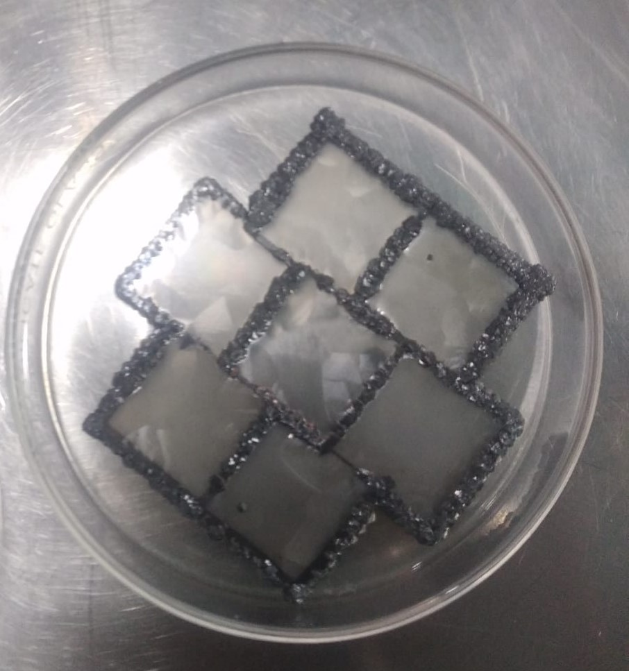

1. What a CVD diamond machine does
A microwave plasma chemical vapour deposition (MPCVD) system creates a controlled low-pressure environment in which a plasma activates hydrogen and a carbon-containing feed gas. Reactive species reach a heated substrate and support diamond deposition. The machine is an integrated vacuum, gas, microwave-power, thermal-management, control and safety system. Exact design and operating limits differ between manufacturers and models.

Illustrative CVD reactor photograph. This is not a photograph of the user's own machine.

The supplied photograph shows substrate samples associated with the growth process, not the machine enclosure.
2. Main machine subsystems
Chamber body, door, viewports, feedthroughs, O-rings, flanges and ports form the controlled process boundary. Clean sealing surfaces and correct gasket condition are essential.
Backing pumps and, where fitted, high-vacuum pumps remove gas and help establish the required pressure range. Pump selection and sequence depend on the reactor design.
Gas cylinders or generators, regulators, purge lines, filters, valves, mass-flow controllers and manifolds deliver controlled gas flows. Gas purity and leak-tight connections matter.
Power source, waveguide, tuner, applicator/resonator and coupling window deliver energy to sustain plasma. Reflected power and plasma position are monitored according to the system design.
The holder positions the seed in the active plasma region. Temperature measurement may use a pyrometer or another validated sensor arrangement.
Water circuits, heat exchangers, flow switches, temperature sensors and a chiller remove heat from components that require cooling.
PLC, HMI, software, interlocks, pressure gauges, flow controllers, power monitoring and alarms provide machine supervision and operating records.
Door switches, cooling-flow interlocks, gas alarms, over-temperature protection, vacuum safeguards and microwave shielding help protect personnel and equipment.
3. Vacuum system and pressure measurement
The chamber is evacuated through a designed pumping train and valves. Pressure measurement may use a Pirani gauge for rough-vacuum ranges and a cold-cathode or other high-vacuum gauge where fitted. Gauge readings depend on gas type, calibration, mounting location and operating range. A pressure that stalls or rises unexpectedly can result from leaks, outgassing, contaminated surfaces, valve position, pump condition or gauge faults. Diagnose systematically rather than changing several components at once.
Maintenance observations
- Inspect O-rings, door seals, flange faces and feedthroughs for damage or contamination.
- Review pump oil/condition and service records according to pump instructions.
- Check valve actuation, position feedback and controller alarms.
- Compare gauge readings with a suitable independent reference when diagnosis requires it.
- Use an approved leak-test procedure and qualified leak detector where required.
4. Gas delivery and MFC control
Mass-flow controllers regulate specified gas flow within their calibrated ranges. Their readings depend on gas calibration, pressure conditions, installation orientation, upstream supply, downstream pressure and controller configuration. A flow mismatch should prompt checks of gas supply pressure, regulator condition, valve state, electrical connection, controller configuration and leak integrity. Never assume a displayed flow value is accurate without considering calibration and operating conditions.
5. Microwave source, resonator and plasma
The microwave subsystem transfers energy from a power source to the plasma region through a waveguide and coupling structure. Tuning and coupling depend on the chamber, plasma load, geometry and operating conditions. High reflected power, unstable plasma or failure to ignite may have multiple causes, including pressure, gas flow, cooling, coupling, contamination, window condition, source faults or interlock states. Only qualified personnel should inspect or service microwave and high-voltage assemblies.
6. Temperature, cooling and process monitoring
Substrate temperature is a critical process variable, but its measurement is affected by sensor alignment, emissivity, optical path, window deposits and calibration. Cooling circuits protect power electronics, magnetron/source assemblies, windows and other components. Confirm flow, inlet/outlet temperature, leaks and alarm history using the machine's approved checks. A chiller alarm or low flow can require stopping operation according to the equipment procedure.
7. Structured troubleshooting workflow
- Record the exact alarm, machine model, run stage and recent changes.
- Check safety interlocks and cooling status without bypassing them.
- Review vacuum trend, pump sequence and valve positions.
- Review gas supply, regulator pressures and MFC command/feedback.
- Review forward/reflected power and plasma observations using approved diagnostics.
- Review temperature readings and sensor condition.
- Compare observations with the model-specific service documentation and escalate uncertain or hazardous work to a qualified technician.
8. Machine maintenance record
Keep a log of machine model/serial, pump hours, oil or filter changes, leak-test results, gauge calibration, MFC calibration, cooling checks, source service, window inspection, alarm history, software changes and completed work. Use manufacturer-specific limits and service intervals; this page does not replace the machine manual.
Technical support from Sweksha
For machine setup, inspection, troubleshooting or process review, share the exact machine model, observed symptoms, operating records and relevant photographs. Service scope and availability are confirmed before work begins.
Phone / WhatsApp: +91 78274 74249
Email: kamatrajukumar2000@gmail.com